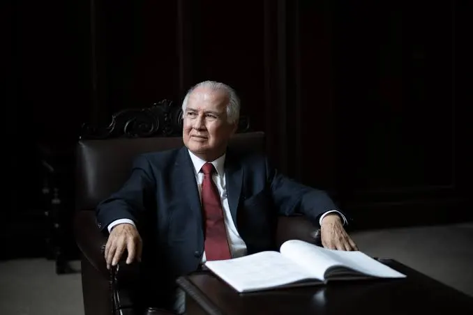
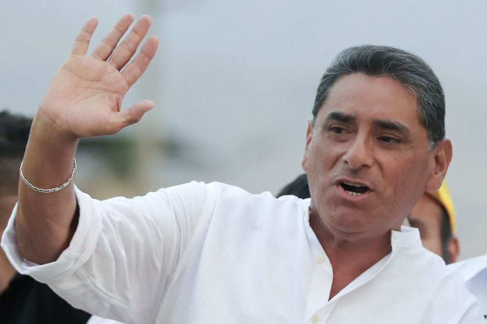
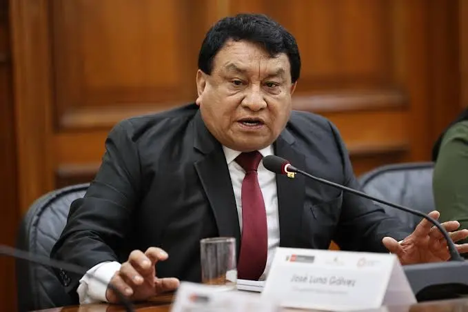
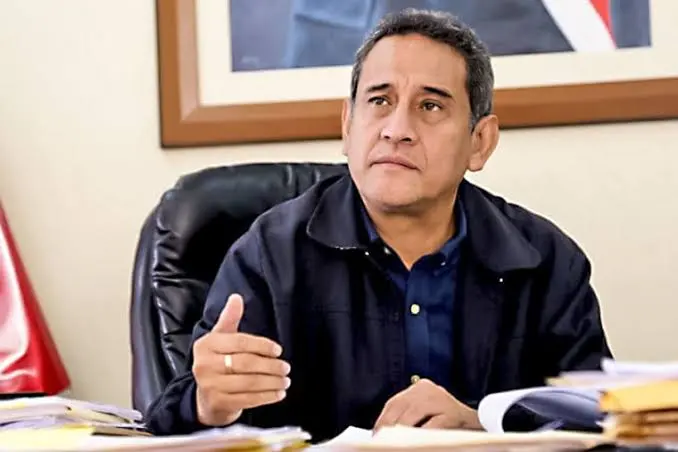

| UNIVERSIDAD | CONCLUIDO | GRADO | AÑO |
|---|---|---|---|
| Universidad Nacional de Trujillo | SÍ | INGENIERO QUÍMICO | - |
ELECCIONES GENERALES 2026
CANDIDATOS PRESIDENCIALES
KEIKO FUJIMORI
RAFAEL LÓPEZ ALIAGA

CÉSAR ACUÑA

ALFONSO LÓPEZ CHAU
ÁLVARO PAZ DE LA BARRA

CARLOS ÁLVAREZ
GEORGE FORSYTH
JORGE MONTOYA

JOSÉ WILLIAMS ZAPATA
MARISOL PÉREZ TELLO

MESÍAS GUEVARA
APP
CÉSAR ACUÑA PERALTA
Cargo al que postula:
PRESIDENTE DE LA REPÚBLICA
Partido: Alianza para el Progreso
Nacimiento: 11/08/1952
ESTUDIOS UNIVERSITARIOS
⌄AN
PABLO ALFONSO LÓPEZ CHAU NAVA
Cargo al que postula:
PRESIDENTE DE LA REPÚBLICA
DNI: 25331980
Lugar de Domicilio: MIRAFLORES
ESTUDIOS UNIVERSITARIOS
⌄| UNIVERSIDAD | CONCLUIDO | GRADO | AÑO |
|---|---|---|---|
| Universidad Nacional del Callao | SÍ | ECONOMISTA | 1981 |
PPT
CARLOS GONZALO ÁLVAREZ LOAYZA
Cargo al que postula:
PRESIDENTE DE LA REPÚBLICA
Ingresos Anuales: S/ 207,543
DNI: 07854122
ESTUDIOS UNIVERSITARIOS
⌄| UNIVERSIDAD | CONCLUIDO | GRADO | AÑO |
|---|---|---|---|
| - | NO | NO REGISTRA | - |
AP
JOSÉ DANIEL WILLIAMS ZAPATA
Cargo al que postula:
PRESIDENTE DE LA REPÚBLICA
DNI: 07254812
Sexo: Masculino
ESTUDIOS UNIVERSITARIOS
⌄| UNIVERSIDAD | CONCLUIDO | GRADO | AÑO |
|---|---|---|---|
| Escuela Militar de Chorrillos | SÍ | LIC. CIENCIAS MILITARES | 2009 |
RP
RAFAEL BERNARDO LÓPEZ ALIAGA CAZORLA
Cargo al que postula:
PRESIDENTE DE LA REPÚBLICA
Partido: Renovación Popular
Cargo: Alcalde de Lima
ESTUDIOS UNIVERSITARIOS
⌄| UNIVERSIDAD | CONCLUIDO | GRADO | AÑO |
|---|---|---|---|
| Univ. Nacional Pedro Ruiz Gallo | SÍ | INGENIERO INDUSTRIAL | - |
SC
JORGE CARLOS MONTOYA MANRIQUE
Cargo al que postula:
PRESIDENTE DE LA REPÚBLICA / SENADOR
Partido: SÍCREO
Nacimiento: 04/04/1951 (LIMA)
Cargo Actual: Congresista de la República
ESTUDIOS UNIVERSITARIOS
⌄| UNIVERSIDAD | CONCLUIDO | GRADO | AÑO |
|---|---|---|---|
| Escuela Naval del Perú | SÍ | BACHILLER EN CIENCIAS MARÍTIMAS | - |
PM
MESÍAS ANTONIO GUEVARA AMASIFUÉN
Cargo al que postula:
PRESIDENTE DE LA REPÚBLICA
DNI: 06283145
Ingresos Anuales: S/ 154,941.00
Nacimiento: 13/06/1963 (CHICLAYO)
ESTUDIOS UNIVERSITARIOS
⌄| UNIVERSIDAD | CONCLUIDO | GRADO | AÑO |
|---|---|---|---|
| Universidad Ricardo Palma | SÍ | INGENIERO ELECTRÓNICO | 1987 |
PPC
MARÍA SOLEDAD PÉREZ TELLO
Cargo al que postula:
PRESIDENTE DE LA REPÚBLICA
Partido: PARTIDO POPULAR CRISTIANO
Profesión: Abogada / Notaria
ESTUDIOS UNIVERSITARIOS
⌄| UNIVERSIDAD | CONCLUIDO | GRADO | AÑO |
|---|---|---|---|
| Univ. San Martín de Porres | SÍ | ABOGADA | - |
SP
GEORGE PATRICK FORSYTH SOMMER
Cargo al que postula:
PRESIDENTE DE LA REPÚBLICA
Ingresos: S/ 0.00 (Decl. 2022)
Bienes: 2 predios (S/ 264,102.85)
Cargo Anterior: Exalcalde de La Victoria
ESTUDIOS UNIVERSITARIOS
⌄| UNIVERSIDAD | CONCLUIDO | GRADO | AÑO |
|---|---|---|---|
| - | NO | SIN INFORMACIÓN | - |
FS
ÁLVARO GONZALO PAZ DE LA BARRA FREIGEIRO
Cargo al que postula:
PRESIDENTE DE LA REPÚBLICA
DNI: 41533621
Partido: FE EN EL PERÚ
Cargo Anterior: Exalcalde de La Molina
ESTUDIOS UNIVERSITARIOS
⌄| UNIVERSIDAD | CONCLUIDO | GRADO | AÑO |
|---|---|---|---|
| Univ. San Martín de Porres | SÍ | ABOGADO | - |
FP
KEIKO SOFÍA FUJIMORI HIGUCHI
Cargo al que postula:
PRESIDENTE DE LA REPÚBLICA
Ingresos: S/ 271,853
DNI: 40433187
ESTUDIOS UNIVERSITARIOS
⌄| UNIVERSIDAD | CONCLUIDO | GRADO | AÑO |
|---|---|---|---|
| Boston University | SÍ | ADMINISTRACIÓN DE EMPRESAS | 1997 |